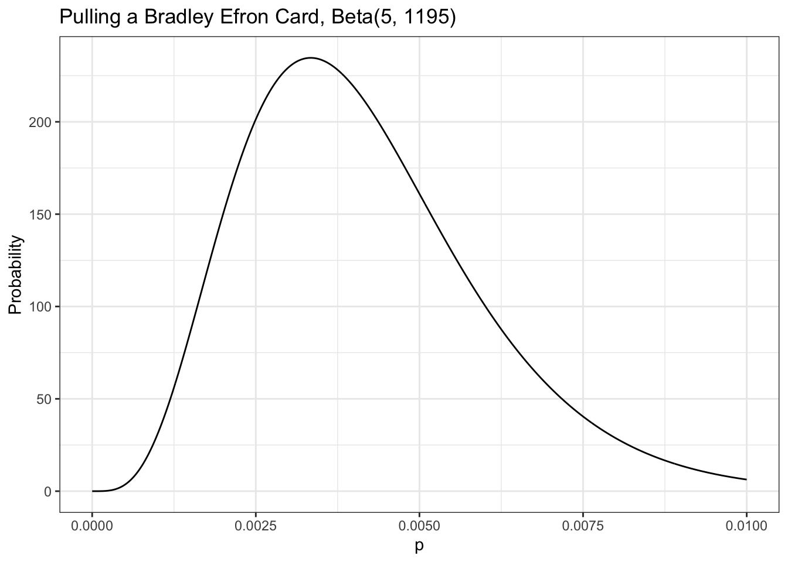

(H1 <- dbinom(14, 41, 1/2))[1] 0.01602537(H2 <- dbinom(14, 41, 14/41))[1] 0.1304709The chapter is concerned with two topics:
If you drop a quarter into a black box, it eject sometimes two quarter but sometimes it “eats” your quarter. So the question is: “What’s the probability of getting two quarters?”
In all of the examples so far, outside of the first chapter, we’ve known the probability of all the possible events, or at least how much we’d be willing to bet on them. In real life we are almost never sure what the exact probability of any event is; instead, we just have observations and data.
This is commonly considered the division between probability and statistics. In probabilities, probability (GLOSSARY), we know exactly how probable all of our events are, and what we are concerned with is how likely certain observations are. For example, we might be told that there is 1/2 probability of getting heads in a fair coin toss and want to know the probability of getting exactly 7 heads in 20 coin tosses.
In statistics discipline, statistics (GLOSSARY), we would look at this problem backward: assuming you observe 7 heads in 20 coin tosses, what is the probability of getting heads in a single coin toss? In a sense, statistics is probability in reverse. The task of figuring out probabilities given data is called inferential statistics, inference (GLOSSARY), and it is the foundation of statistics.
We want to estimate the probability that the mysterious box will deliver two quarters, and to do that, we first need to see how frequently you win after a few more tries. We’ve got 14 wins and 27 losses.
Without doing any further analysis, you might intuitively want to update your guess that P(two quarters) = 1/2 to P(two quarters) = 14/41. But what about your original guess—does your new data mean it’s impossible that 1/2 is the real probability?
\[ \begin{align*} H_{1} \space is \space P(\text{two coins}) = \frac{1}{2} \\ H_{2} \space is \space P(\text{two coins}) = \frac{14}{41} \end{align*} \] “How probable is what we observed if \(H_{1}\) were true versus if \(H_{2}\) were true?” We can easily calculate this using Equation 4.6 of the binomial distribution from Chapter 4.
(H1 <- dbinom(14, 41, 1/2))[1] 0.01602537(H2 <- dbinom(14, 41, 14/41))[1] 0.1304709This shows us that, given the data (observing 14 cases of getting two coins out of 41 trials), \(H_{2}\) is almost 10 times more probable than \(H_{1}\)! However, it also shows that neither hypothesis is impossible and that there are, of course, many other hypotheses we could make based on our data.
If we wanted to look for a pattern, we could pick every probability from 0.1 to 0.9, incrementing by 0.1; calculate the probability of the observed data in each distribution; and develop our hypothesis from that.

Even with all these hypotheses, there’s no way we could cover every possible eventuality because we’re not working with a finite number of hypotheses. So let’s try to get more information by testing more distributions. If we repeat the last experiment, testing each possibility at certain increments starting with 0.01 and ending with 0.99, incrementing by only 0.01 would give us the results in Figure 5.2.

This seems like valuable information; we can easily see where the probability is highest. Our goal, however, is to model our beliefs in all possible hypotheses (that is, the full probability distribution of our beliefs).
There are two problems:
Even though there are infinitely many possibilities here, we still need them all to sum to 1. This is where the beta distribution comes in.
Unlike the binomial distribution (GLOSSARY), which breaks up nicely into discrete values, the beta distribution (GLOSSARY) represents a continuous range of values, which allows us to represent our infinite number of possible hypotheses.
We define the beta distribution with a probability density function PDF (GLOSSARY), which is very similar to the probability mass function we use in the binomial distribution, but is defined for continuous values.
Theorem 5.1 (Formula for the PDF of the beta function) \[ Beta(p; \alpha,\beta) = \frac{p^{\alpha - 1} \times (1 - p)^{\beta - 1}}{beta(\alpha, \beta)} \tag{5.1}\]
p: Represents the probability of an event. This corresponds to our different hypotheses for the possible probabilities for our black box.
$\alpha$: Represents how many times we observe an event we care about, such as getting two quarters from the box.
$\beta$: Represents how many times the event we care about didn’t happen. For our example, this is the number of times that the black box ate the quarter.
$\alpha + \beta$: The total number of trials. This is different than the binomial distribution, where we have k observations we’re interested in and a finite number of n total trials.
The top part of the PDF (GLOSSARY) function should look pretty familiar because it’s almost the same as the binomial distribution’s PMF (GLOSSARY) in Equation 4.6.
Differences between the PMF of the binomial distribution and the PDF of the beta distribution:
What we get in the end is a function that describes the probability of each possible hypothesis for our true belief in the probability of getting two heads from the box, given that we have observed \(\alpha\) examples of one outcome and \(\beta\) examples of another. Remember that we arrived at the beta distribution by comparing how well different binomial distributions, each with its own probability \(p\), described our data. In other words, the beta distribution represents how well all possible binomial distributions describe the data observed.
When we plug in our values for our black box data and visualize the beta distribution, shown in Figure 5.3, we see that it looks like a smooth version of the plot in Figure 5.2.

While we can see the distribution of our beliefs by looking at a plot, we’d still like to be able to quantify exactly how strongly we believe that “the probability that the true rate at which the box returns two quarters is less than 0.5.”
The beta distribution is fundamentally different from the binomial distribution in that with the latter, we are looking at the distribution of \(k\), the number of outcomes we care about, which is always something we can count. For the beta distribution, however, we are looking at the distribution of \(p\), for which we have an infinite number of possible values.
We know that the fundamental rule of probability is that the sum of all our values must be 1, but each of our individual values is infinitely small, meaning the probability of any specific value is in practice 0.
The zero probability of an event in a continuous distribution does not mean that this event never could happen. Zero probability only means that the events gets the probability measure of zero.
Our intuition from discrete probability is that if an outcome has zero probability, then the outcome is impossible. With continuous random variables (or more generally, an infinite number of possible outcomes) that intuition is flawed. (StackExchange)
For example, even if we divided a 1-pound bar of chocolate into infinitely many pieces, we can still add up the weight of the pieces in one half of the chocolate bar. Similarly, when talking about probability in continuous distributions, we can sum up ranges of values. But if every specific value is 0, then isn’t the sum just 0 as well?
This is where calculus comes in: in calculus, there’s a special way of summing up infinitely small values called the integral.
If we want to know whether the probability that the box will return a coin is less than 0.5 (that is, the value is somewhere between 0 and 0.5), we can sum it up like this:
\[\int_{0}^{0.5} \frac{p^{14 - 1} \times (1 - p)^{27 - 1}}{beta(14, 27)} \tag{5.2}\]
R includes a function called dbeta() that is the PDF for the beta distribution. This function takes three arguments, corresponding to \(p\), \(\alpha\), and \(\beta\). We use this together with R’s integrate() function to perform this integration automatically. Here we calculate the probability that the chance of getting two coins from the box is less than or equal to 0.5, given the data:
integrate(function(p) dbeta(p,14,27),0,0.5)0.9807613 with absolute error < 5.9e-06The “absolute error” message appears because computers can’t perfectly calculate integrals so there is always some error, though usually it is far too small for us to worry about. This result from R tells us that there is a 0.98 probability that, given our evidence, the true probability of getting two coins out of the black box is less than 0.5. This means it would not be good idea to put any more quarters in the box, since you very likely won’t break even.
In real-life situations, we almost never know the true probabilities for events. That’s why the beta distribution is one of our most powerful tools for understanding our data.
In Section 4.4 of Chapter 4 , we knew the probability of the card we wanted to pull. In reality, the game developers are very unlikely to give players this information, for many reasons (such as not wanting players to calculate how unlikely they are to get the card they want).
This time we don’t know the rates for the card, but we really want that card—and more than one if possible. We spend a ridiculous amount of money and find that from 1,200 cards pulled, we received only 5 cards we’re interested in. Our friend is thinking of spending money on the game but only wants to do it if there is a better than 0.7 probability that the chance of pulling the card is greater than 0.005.
Our data tells us that of 1,200 cards pulled, only 5 were cards we are interested in, so we can visualize this as Beta(5,1195), shown in Figure 5.4 (remember that the total cards pulled is \(\alpha + \beta\)).

From our visualization we can see that nearly all the probability density is below 0.01. We need to know exactly how much is above 0.005, the value that our friend cares about. We can solve this by integrating over the beta distribution in R:
integrate(function(x) dbeta(x,5,1195),0.005,1)0.2850559 with absolute error < 1e-04This tells us the probability that the rate of pulling a card we are interested is 0.005 or greater, given the evidence we have observed, is only 0.29. Our friend will pull for this card only if the probability is around 0.7 or greater, so based on the evidence from our data collection, our friend should not try his luck.
We learned about the beta distribution, which is closely related to the binomial distribution but behaves quite differently. The major difference between the beta distribution and the binomial distribution is that the beta distribution is a continuous probability distribution. Because there are an infinite number of values in the distribution, we cannot sum results the same way we do in a discrete probability distribution. Instead, we need to use calculus to sum ranges of values. Fortunately, we can use R instead of solving tricky integrals by hand.
We built up to the beta distribution by observing how well an increasing number of possible binomial distributions explained our data. The beta distribution allows us to represent how strongly we believe in all possible probabilities for the data we observed. This enables us to perform statistical inference on observed data by determining which probabilities we might assign to an event and how strongly we believe in each one: a probability of probabilities.
Try answering the following questions to make sure you understand how we can use the Beta distribution to estimate probabilities. The solutions can be found at https://nostarch.com/learnbayes/.
You want to use the beta distribution (GLOSSARY) to determine whether or not a coin you have is a fair coin — meaning that the coin gives you heads and tails equally. You flip the coin 10 times and get 4 heads and 6 tails. Using the beta distribution, what is the probability that the coin will land on heads more than 60 percent of the time?
integrate(function(p) dbeta(p, 4, 6), 0.6, 1)0.09935258 with absolute error < 1.1e-15You flip the coin 10 more times and now have 9 heads and 11 tails total. What is the probability that the coin is fair, using our definition of fair, give or take 5 percent?
integrate(function(p) dbeta(p, 9, 11), 0.45, 0.55)0.30988 with absolute error < 3.4e-15Data is the best way to become more confident in your assertions. You flip the coin 200 more times and end up with 109 heads and 111 tails. Now what is the probability that the coin is fair, give or take 5 percent?
integrate(function(p) dbeta(p, 109, 111), 0.45, 0.55)0.8589371 with absolute error < 9.5e-15To replicate Figure 5.1 we need to pick every probability from 0.1 to 0.9, incrementing by 0.1; and then to calculate the probability of the observed data (14 cases of getting two coins out of 41 trials) in each distribution:
tibble::tibble(x = seq(from = 0.1, to = 0.9, by = 0.1),
y = dbinom(14, 41, x)) |>
ggplot2::ggplot(ggplot2::aes(x = x, y = y)) +
ggplot2::geom_point() +
ggplot2::theme_bw() +
ggplot2::labs(
title = "Probability of different values for p given observation",
x = "p",
y = "Probability"
)Repeating Section 5.6.1, we want to display each possibility at smaller increments starting with 0.01 and ending with 0.99, incrementing by only 0.01:
tibble::tibble(x = seq(from = 0.01, to = 0.99, by = 0.01),
y = dbinom(14, 41, x)) |>
ggplot2::ggplot(ggplot2::aes(x = x, y = y)) +
ggplot2::geom_point() +
ggplot2::theme_bw() +
ggplot2::labs(
title = "Probability of different values for p given observation",
x = "p",
y = "Probability"
)Our data: We’ve got 14 successes (two coins) with 41 trials.
tibble::tibble(x = seq(from = 0, to = 1, by = 0.01),
y = dbeta(x, 14, 27)) |>
ggplot2::ggplot(ggplot2::aes(x = x, y = y)) +
ggplot2::geom_line() +
ggplot2::theme_bw() +
ggplot2::labs(
title = "Distribution for Beta(14, 27)",
x = "p",
y = "Probability"
)Our data tells us that of 1,200 cards pulled, there were only 5 cards we are interested in. Our friend is thinking of spending money on the game but only wants to do it if there is a better than 0.7 probability that the chance of pulling a Bradley Efron (the card we are interested) is greater than 0.005.
tibble::tibble(x = seq(from = 0, to = 1, length = 1000),
y = dbeta(x,5,1195)) |>
ggplot2::ggplot(ggplot2::aes(x = x, y = y)) +
ggplot2::geom_line() +
ggplot2::theme_bw() +
ggplot2::labs(
title = "Pulling a Bradley Efron Card, Beta(5, 1195)",
x = "p",
y = "Probability"
)This was my first try. At first I thought that my Listing 5.11 is wrong as Figure 5.4 has a very different appearance. But then I noticed that my graphics displays value from 0 to 1 whereas Figure 5.4 visualizes only values between 0 and 0.01!
In Listing 5.12 I changed the visualization just showing values from 0 to 0.01.
tibble::tibble(x = seq(from = 0, to = 0.01, length = 1000),
y = dbeta(x,5,1195)) |>
ggplot2::ggplot(ggplot2::aes(x = x, y = y)) +
ggplot2::geom_line() +
ggplot2::theme_bw() +
ggplot2::labs(
title = "Pulling a Bradley Efron Card, Beta(5, 1195)",
x = "p",
y = "Probability"
)